DP on Strings: LCS, Substrings, Palindromes & Pattern Matching
Expanded from handwritten competitive coding study notes (02_DP_String_notes_1.pdf, 03_DP_String_notes_2.pdf, 11_Vid_27_Longest_common_substring.pdf, 12_Vid_28_Longest_palindromic_subsequence.pdf, 13_Longest_comman_palindromic_substring.pdf)
A single index cannot track independent progress across two strings $s_1$ (length $m$) and $s_2$ (length $n$). Almost every two-string DP therefore operates on a prefix pair $(i, j)$—and with one clean trick called $+1$ index shifting, a single $(m+1) \times (n+1)$ table unlocks an entire family of nine problems: Longest Common Subsequence, Longest Common Substring, Longest Palindromic Subsequence, Longest Palindromic Substring, Minimum Palindrome Insertions, Two-String Deletions, Shortest Common Supersequence, Edit Distance, Distinct Subsequences, and Wildcard Matching.
1. Longest Common Subsequence (LCS) & $+1$ Index Shifting
Consider $s_1 = \texttt{"acd"}$ and $s_2 = \texttt{"ced"}$ (LCS $= \texttt{"cd"}$ of length $2$). Let $f(i, j)$ denote the LCS length of 0-based prefixes $s_1[0 \dots i]$ and $s_2[0 \dots j]$:
- Characters match ($s_1[i] == s_2[j]$): Both characters extend a common subsequence simultaneously—greedily take $1 + f(i - 1, j - 1)$.
- Characters mismatch ($s_1[i] \ne s_2[j]$): They cannot both be matched together, so explore shrinking either first or second prefix: $\max\bigl(f(i - 1, j),\; f(i, j - 1)\bigr)$.
- Base case: Whenever $i < 0$ or $j < 0$ (an empty prefix), return $0$.
The $+1$ Index-Shifting Technique for Clean Tabulation
In 0-based recursion, the base case lives at negative indices $i = -1$ or $j = -1$, which cannot index a C++/Python array directly. By shifting every DP coordinate right by $+1$ so state $(i, j) \in [0..m] \times [0..n]$ represents prefix lengths (comparing s1[i - 1] and s2[j - 1]), empty-string base cases sit cleanly at row $0$ and column $0$ ($dp[i][0] = 0$, $dp[0][j] = 0$) with zero bounds-checking clutter!
#include <bits/stdc++.h>
using namespace std;
// Computes LCS table AND reconstructs one actual Longest Common Subsequence string
string longestCommonSubsequenceString(const string& s1, const string& s2) {
int m = (int)s1.size(), n = (int)s2.size();
vector<vector<int>> dp(m + 1, vector<int>(n + 1, 0));
for (int i = 1; i <= m; ++i) {
for (int j = 1; j <= n; ++j) {
if (s1[i - 1] == s2[j - 1])
dp[i][j] = 1 + dp[i - 1][j - 1];
else
dp[i][j] = max(dp[i - 1][j], dp[i][j - 1]);
}
}
// Backtrack from (m, n) to print the LCS string
string lcs;
int i = m, j = n;
while (i > 0 && j > 0) {
if (s1[i - 1] == s2[j - 1]) {
lcs.push_back(s1[i - 1]);
--i; --j;
} else if (dp[i - 1][j] > dp[i][j - 1]) {
--i;
} else {
--j;
}
}
reverse(lcs.begin(), lcs.end());
return lcs; // Length is dp[m][n]; Time O(m*n), Space O(m*n) [or O(n) for length only]
}2. Longest Common Substring (Max Repeated Subarray)
Unlike a subsequence, a substring (or subarray, LeetCode 718) requires matched characters to be strictly consecutive in both inputs (e.g., $s_1 = \texttt{"abcjklp"}$ and $s_2 = \texttt{"acjkp"}$ share longest common substring $\texttt{"cjk"}$ of length $3$; arrays $[1,2,3,2,1]$ and $[3,2,1,4,7]$ share $[3,2,1]$ of length $3$).
Why LCS's Mismatch Rule Fails on Substrings ("acd" vs. "axd")
As analyzed in 11_Vid_27 and 02_DP_String_notes_1 p.2, on $\texttt{"acd"}$ vs. $\texttt{"axd"}$, matching $\texttt{'d'}$ produces $1$, and if the mismatch $(\texttt{'c'} \ne \texttt{'x'})$ propagated $\max(dp[i-1][j], dp[i][j-1])$, that $1$ would carry across the gap to $(\texttt{'a'} == \texttt{'a'})$, falsely reporting $1 + 1 = 2$ ($\texttt{"ad"}$)! Shrinking one string while holding the other breaks continuity.
The Fix — Break the Chain on Mismatch: Redefine $dp[i][j]$ as the length of the longest common substring ending simultaneously at $s_1[i-1]$ and $s_2[j-1]$:
$$dp[i][j] = \begin{cases} 1 + dp[i-1][j-1] & \text{if } s_1[i-1] == s_2[j-1] \\ \mathbf{0} & \text{if } s_1[i-1] \ne s_2[j-1] \end{cases}$$Because resets to $0$ can happen anywhere, $dp[m][n]$ is not the final answer! Instead, track $\text{ans} = \max_{i,j} dp[i][j]$ across the entire table (and since $dp[i][j]$ only reads the diagonal $dp[i-1][j-1]$, iterating $j = n \dots 1$ backwards compresses space to a single $O(n)$ vector).
int longestCommonSubstring(const vector<int>& nums1, const vector<int>& nums2) {
int m = (int)nums1.size(), n = (int)nums2.size();
vector<int> dp(n + 1, 0);
int ans = 0;
for (int i = 1; i <= m; ++i) {
for (int j = n; j >= 1; --j) { // Backward j reads untouched previous-row dp[j-1]
if (nums1[i - 1] == nums2[j - 1]) {
dp[j] = 1 + dp[j - 1];
ans = max(ans, dp[j]);
} else {
dp[j] = 0; // Break the propagation chain!
}
}
}
return ans; // Time O(m*n), Space O(n)
}3. Palindromic Subsequences vs. Palindromic Substrings
3.1 Longest Palindromic Subsequence (LPS — LeetCode 516)
A palindrome reads identically forward and backward. Therefore, any palindromic subsequence of $s$ appears in the exact same order in both $s$ and $\text{reverse}(s)$! From 12_Vid_28 on $s = \texttt{"bbabcbcab"}$ and $\text{rev}(s) = \texttt{"bacbcbabb"}$:
3.2 Longest Palindromic Substring (LeetCode 5) & the Reverse-Substring Trap
Handwritten Counterexample: Why LCSubstring(s, reverse(s)) Fails!
In 13_Longest_comman_palindromic_substring.pdf p.1, test $s = \texttt{"abcxyzcba"}$ against $s_{\text{rev}} = \texttt{"abczyxcba"}$. Their Longest Common Substring table outputs length $3$ for $\texttt{"abc"}$—because the prefix $\texttt{"abc"}$ at indices $0..2$ matches the reversed suffix $\texttt{"cba"}$ from indices $6..8$, even though $\texttt{"abc"}$ is not a palindrome! (Reversing matches mirrored disjoint halves unless you also enforce index mirror alignment $i - L = n - j$.)
Instead, define interval boolean state $dp[i][j] \in \{\text{true}, \text{false}\}$ asking directly: "Is substring $s[i \dots j]$ a palindrome?" Using the three observations from 13_Longest_comman_palindromic_substring.pdf:
- Length $1$ ($i == j$): Every single character ($\texttt{"a"}$) is a palindrome $\implies dp[i][i] = \text{true}$.
- Length $2$ ($j - i == 1$): Two adjacent characters ($\texttt{"aa"}$ vs. $\texttt{"ab"}$) form a palindrome iff $s[i] == s[j]$.
- Length $\ge 3$ ($j - i \ge 2$): Wrapping $\texttt{a}\text{[bcb]}\texttt{a}$ is a palindrome iff outer characters match ($s[i] == s[j]$) AND the interior substring is already a palindrome ($dp[i+1][j-1] == \text{true}$).
def longestPalindromeDP(s: str) -> str:
n = len(s)
if n <= 1:
return s
dp = [[False] * n for _ in range(n)]
best_start, best_len = 0, 1
for i in range(n):
dp[i][i] = True
# Sweep i from bottom to top so dp[i + 1][j - 1] is always ready
for i in range(n - 1, -1, -1):
for j in range(i + 1, n):
if s[i] == s[j] and (j - i <= 2 or dp[i + 1][j - 1]):
dp[i][j] = True
if j - i + 1 > best_len:
best_start, best_len = i, j - i + 1
return s[best_start : best_start + best_len] # O(n^2) time, O(n^2) space4. String Conversions Directly Derived from LCS
Three classic problems reduce immediately to preserving the Longest Common (or Palindromic) Subsequence and only inserting/deleting the leftover characters:
- Minimum Insertions to Make a String Palindrome (LeetCode 1312): Keep $\text{LPS}(s)$ fixed in place and mirror-insert the remaining characters: $$\text{Min Insertions} = |s| - \text{LPS}(s) = |s| - \text{LCS}\bigl(s, \text{reverse}(s)\bigr)$$
- Delete Operation for Two Strings (LeetCode 583): Strip both $w_1$ and $w_2$ down to their shared $\text{LCS}(w_1, w_2)$: $$\text{Min Deletions} = |w_1| + |w_2| - 2 \cdot \text{LCS}(w_1, w_2)$$
- Shortest Common Supersequence (SCS — LeetCode 1092): Merge $s_1$ and $s_2$ into the shortest string containing both as subsequences by writing $\text{LCS}(s_1, s_2)$ once instead of twice: $$|\text{SCS}(s_1, s_2)| = |s_1| + |s_2| - \text{LCS}(s_1, s_2)$$ For the handwritten example $s_1 = \texttt{"abac"}$, $s_2 = \texttt{"cab"}$, $\text{LCS} = \texttt{"ab"}$ has length $2$, giving SCS length $4 + 3 - 2 = 5$ ($\texttt{"cabac"}$). Backtrack from $(m, n)$: emit matching characters once, emit skipped characters as you step up or left, flush whichever prefix remains (`i > 0` or `j > 0`), and reverse!
string shortestCommonSupersequence(const string& s1, const string& s2) {
int m = (int)s1.size(), n = (int)s2.size();
vector<vector<int>> dp(m + 1, vector<int>(n + 1, 0));
for (int i = 1; i <= m; ++i)
for (int j = 1; j <= n; ++j)
dp[i][j] = (s1[i - 1] == s2[j - 1])
? (1 + dp[i - 1][j - 1])
: max(dp[i - 1][j], dp[i][j - 1]);
string ans;
int i = m, j = n;
while (i > 0 && j > 0) {
if (s1[i - 1] == s2[j - 1]) {
ans.push_back(s1[i - 1]); // Common LCS char included ONCE
--i; --j;
} else if (dp[i - 1][j] > dp[i][j - 1]) {
ans.push_back(s1[i - 1]);
--i;
} else {
ans.push_back(s2[j - 1]);
--j;
}
}
while (i > 0) ans.push_back(s1[--i]);
while (j > 0) ans.push_back(s2[--j]);
reverse(ans.begin(), ans.end());
return ans;
}5. Edit Distance, Distinct Subsequences & Wildcard Matching
5.1 Edit Distance (LeetCode 72)
Transform $w_1 \to w_2$ (e.g., $\texttt{"horse"} \to \texttt{"ros"}$ in $3$ operations) using single-character insert, delete, or replace:
- Base cases: $dp[i][0] = i$ (delete all $i$ characters of $w_1[:i]$ to match empty $w_2$), and $dp[0][j] = j$ (insert all $j$ characters of $w_2[:j]$ into empty $w_1$).
- Transition: If $w_1[i-1] == w_2[j-1]$, zero edits needed: $dp[i-1][j-1]$. Otherwise: $$dp[i][j] = 1 + \min\bigl(\underbrace{dp[i-1][j-1]}_{\text{replace}},\; \underbrace{dp[i-1][j]}_{\text{delete } w_1[i-1]},\; \underbrace{dp[i][j-1]}_{\text{insert } w_2[j-1]}\bigr)$$
5.2 Distinct Subsequences (String Matching — LeetCode 115)
Count how many distinct subsequences of $s$ equal $t$ (e.g., $s = \texttt{"rabbbit"}$, $t = \texttt{"rabbit"} \implies 3$ ways to pick two $\texttt{'b'}$s out of three):
- Base cases (order matters!): If $t$ is exhausted ($j = 0$), we found $1$ valid match: $dp[i][0] = 1$ for all $i \ge 0$ (including $dp[0][0] = 1$). Otherwise if $s$ is exhausted ($i = 0, j > 0$), $dp[0][j] = 0$.
- Transition: When $s[i-1] == t[j-1]$, we can either match these characters ($dp[i-1][j-1]$) or skip $s[i-1]$ to look for an earlier occurrence ($dp[i-1][j]$): $$dp[i][j] = \begin{cases} dp[i-1][j-1] + dp[i-1][j] & \text{if } s[i-1] == t[j-1] \\ dp[i-1][j] & \text{otherwise} \end{cases}$$
// Single-array O(n) space optimization for Distinct Subsequences
int numDistinct(const string& s, const string& t) {
int m = (int)s.size(), n = (int)t.size();
vector<unsigned long long> dp(n + 1, 0);
dp[0] = 1; // Empty target t is matched in 1 way
for (int i = 1; i <= m; ++i) {
for (int j = n; j >= 1; --j) { // Right-to-left preserves previous-row dp[j-1]
if (s[i - 1] == t[j - 1]) {
dp[j] += dp[j - 1];
}
}
}
return (int)dp[n];
}5.3 Wildcard Matching (LeetCode 44)
Given pattern $p$ containing literal letters, '?' (matches any single character), and '*' (matches any sequence of length $\ge 0$, including empty string) against text $s$ (e.g., $p = \texttt{"ab*cd"}$ matches $s = \texttt{"abdefcd"}$):
- Character or
'?'match ($p[i-1] == s[j-1]$ or $p[i-1] == \texttt{'?'}$): Consume both $\implies dp[i-1][j-1]$. - Star wildcard ($p[i-1] == \texttt{'*'}$): Avoid an $O(n)$ inner loop via a binary split! Either
'*'matches zero characters ($dp[i-1][j]$, discarding'*') OR'*'consumes one character $s[j-1]$ and stays active at $i$ to potentially consume more ($dp[i][j-1]$): $$dp[i][j] = dp[i-1][j] \;\lor\; dp[i][j-1]$$ - Three Exact Base Cases (
03_DP_String_notes_2.pdfp.6):- $i = 0, j = 0$: both exhausted $\implies dp[0][0] = \text{true}$.
- $i = 0, j > 0$: pattern exhausted while text remains $\implies dp[0][j] = \text{false}$.
- $i > 0, j = 0$: text exhausted while pattern remains $\implies dp[i][0] = \text{true}$ if and only if every character in $p[0 \dots i-1]$ is
'*'!
bool isWildcardMatch(const string& s, const string& p) {
int m = (int)p.size(), n = (int)s.size();
vector<vector<bool>> dp(m + 1, vector<bool>(n + 1, false));
dp[0][0] = true;
// Base case 3: empty string s matches pattern prefix iff prefix is all '*'
for (int i = 1; i <= m; ++i) {
if (p[i - 1] == '*') dp[i][0] = dp[i - 1][0];
else break;
}
for (int i = 1; i <= m; ++i) {
for (int j = 1; j <= n; ++j) {
if (p[i - 1] == s[j - 1] || p[i - 1] == '?') {
dp[i][j] = dp[i - 1][j - 1];
} else if (p[i - 1] == '*') {
dp[i][j] = dp[i - 1][j] || dp[i][j - 1];
} else {
dp[i][j] = false;
}
}
}
return dp[m][n]; // O(m*n) time, O(m*n) space [reducible to O(n)]
}03_DP_String_notes_2.pdf
Pages 1–3 of 03_DP_String_notes_2.pdf also contain an initial Python memoization and patience-pile sketch for Longest Increasing Subsequence ($[1, 7, 8, 4, 5, 6, -1, 9]$). That derivation is merged and expanded in full detail alongside Vid 41–43 in Part 4: LIS & Boolean Parenthesization, while all original scans of 03_DP_String_notes_2.pdf are archived below.
From the Handwritten Notes
Expand the original handwritten pages below to inspect the exact derivations, dry runs, and annotations:
View original note — DP String Notes 1 (Page 1): Longest Common Subsequence & +1 Index Shift

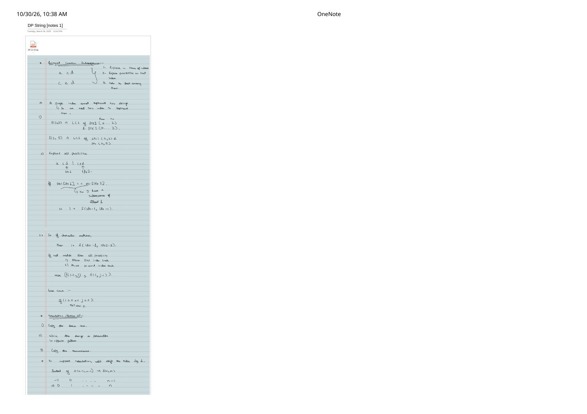
02_DP_String_notes_1.pdf p.1 — Dual-index formulation on "acd" vs. "ced" and $+1$ index shifting for tabulation.View original note — DP String Notes 1 (Page 2): LCS Code & Max Length of Repeated Subarray (#718)

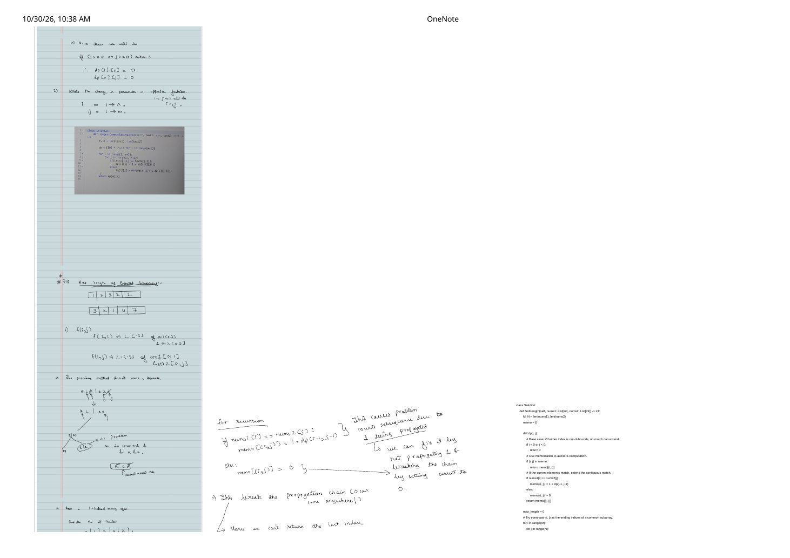
02_DP_String_notes_1.pdf p.2 — Why propagating 1 across mismatches breaks substring contiguity, and resetting memo[(i,j)] = 0.View original note — DP String Notes 1 (Page 3): Substring Diagonal Table & Longest Palindromic Substring

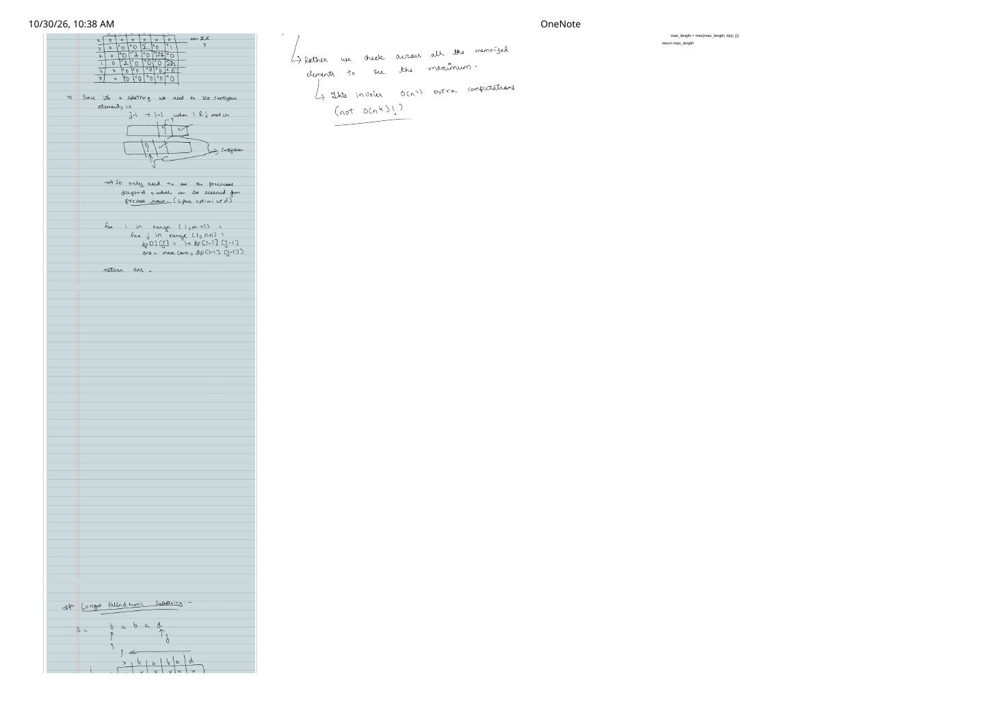
02_DP_String_notes_1.pdf p.3 — Diagonal lookup for $[1,2,3,2,1]$ vs. $[3,2,1,4,7]$ and beginning of "babad" palindrome table.View original note — DP String Notes 1 (Page 4): Longest Palindromic Substring Code & Min Palindrome Insertions (#1312)

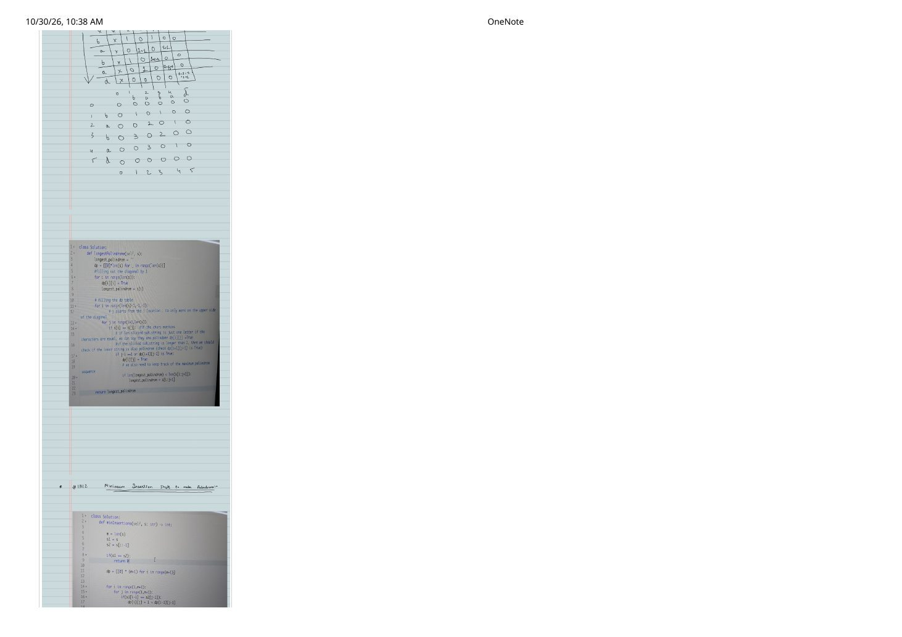
02_DP_String_notes_1.pdf p.4 — Upper-triangular boolean palindrome DP and LeetCode 1312 setup.View original note — DP String Notes 1 (Page 5): Shortest Common Supersequence (#1092) Dry Run & Code

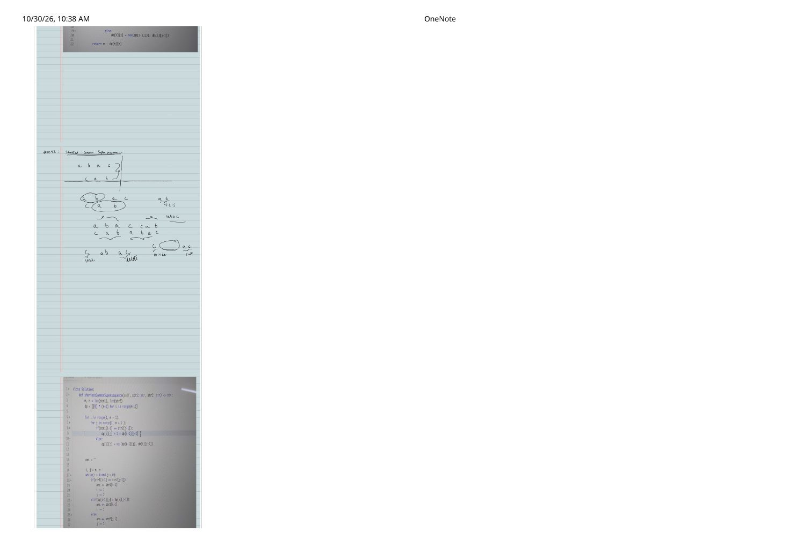
02_DP_String_notes_1.pdf p.5 — Merging "abac" and "cab" into "cabac" via LCS table backtracking.View original note — DP String Notes 1 (Page 6): SCS Tail Loops & Edit Distance ("horse" → "ros")

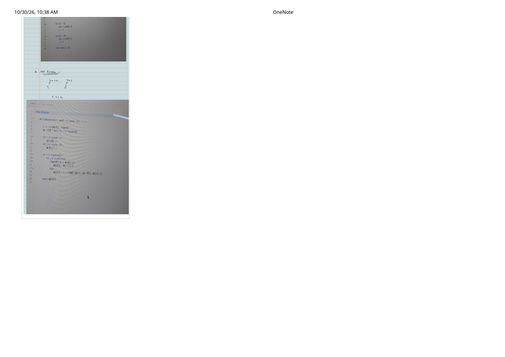
02_DP_String_notes_1.pdf p.6 — Remaining prefix flush in SCS and bottom-up Edit Distance implementation.View original note — Vid 27 (Page 1): Longest Common Substring Continuity Analysis

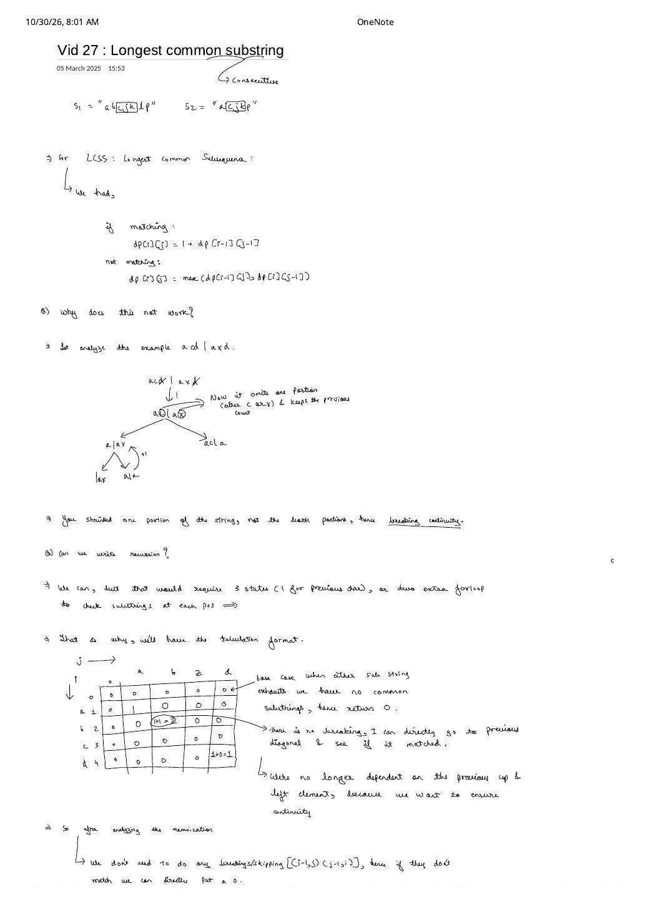
11_Vid_27_Longest_common_substring.pdf p.1 — Counterexample tree on "acd" vs. "axd" and tabulation table on "abcd" vs. "abzd".View original note — Vid 27 (Page 2): Longest Common Substring Recurrence & LeetCode 718 Python Code

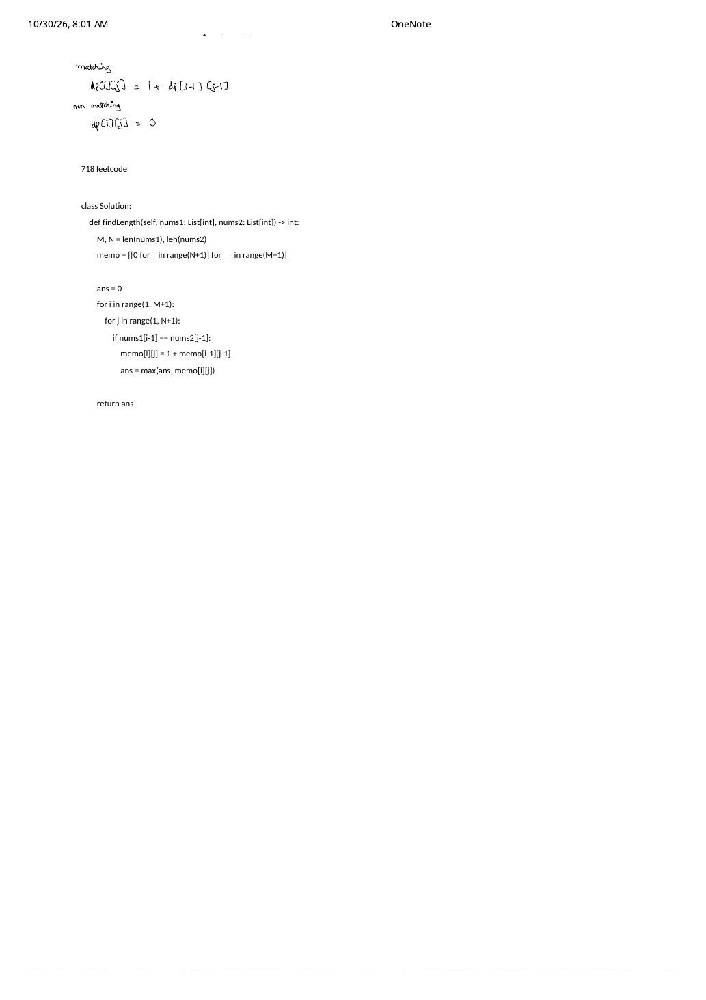
11_Vid_27_Longest_common_substring.pdf p.2 — Clean $O(MN)$ Python tabulation tracking global ans.View original note — Vid 28 (Page 1): Longest Palindromic Subsequence via LCS(s, reverse(s))

12_Vid_28_Longest_palindromic_subsequence.pdf p.1 — Matching "bbabcbcab" against its reverse "bacbcbabb".View original note — Longest Palindromic Substring (Page 1): Why Reverse-LCSubstring Fails & 3 Key Observations

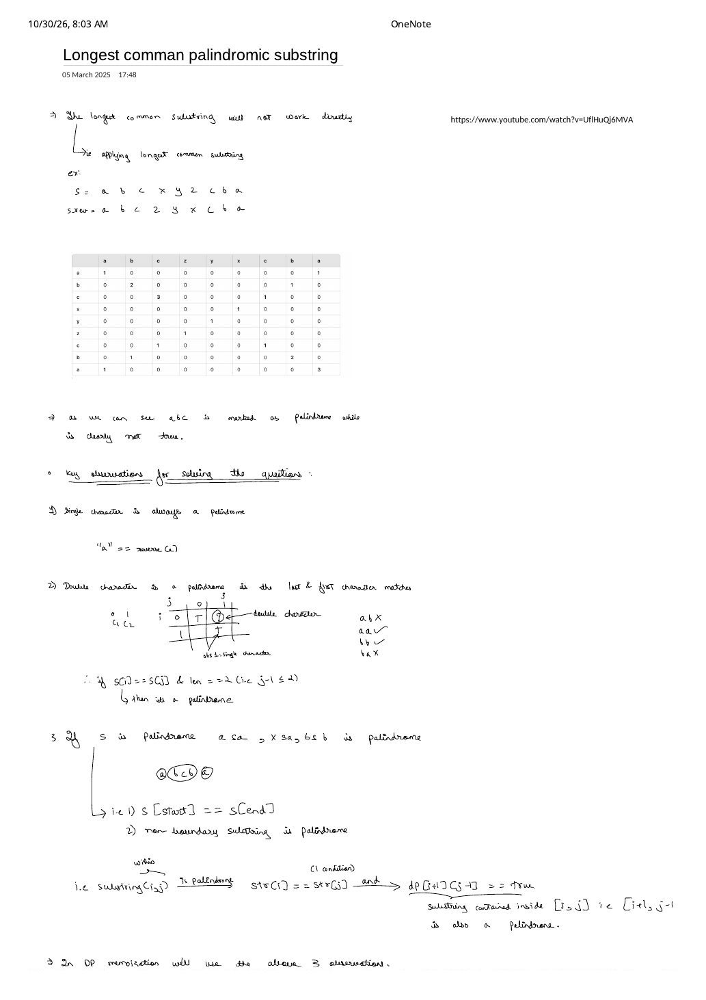
13_Longest_comman_palindromic_substring.pdf p.1 — The "abcxyzcba" false-palindrome table and single/double/interior palindrome conditions.View original note — Longest Palindromic Substring (Page 2): Interval State (i, j) Matrix on "aaaabbaa"

13_Longest_comman_palindromic_substring.pdf p.2 — Boolean interval matrix trace for "aaaabbaa" ($\text{maxLen} = 6$).View original note — DP String Notes 2 (Page 1): LIS O(n²) Recurrence Sketch

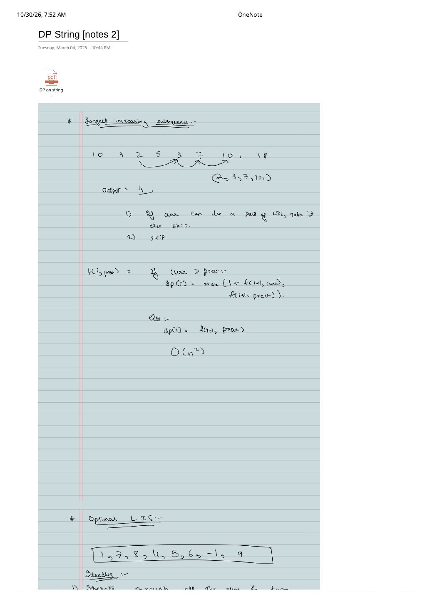
03_DP_String_notes_2.pdf p.1 — Initial LIS $(i, \text{prev})$ sketch on $[10, 9, 2, 5, 3, 7, 101, 18]$ (covered in detail in Part 4).View original note — DP String Notes 2 (Page 2): Optimal LIS Binary Search Replacement Cases

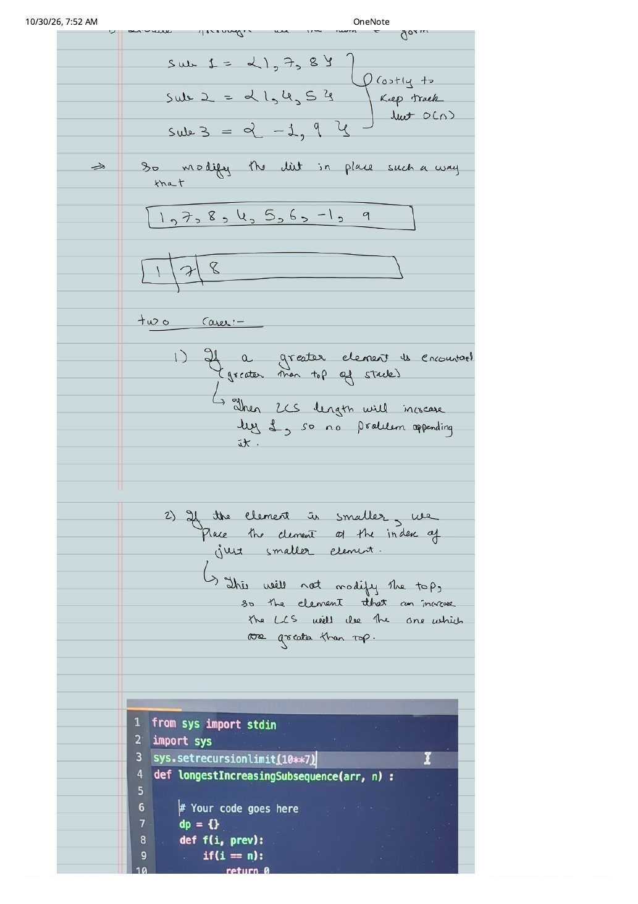
03_DP_String_notes_2.pdf p.2 — In-place replacement trace on $[1, 7, 8, 4, 5, 6, -1, 9]$.View original note — DP String Notes 2 (Page 3): Delete Operations for Two Strings (#583) & Distinct Subsequences Header

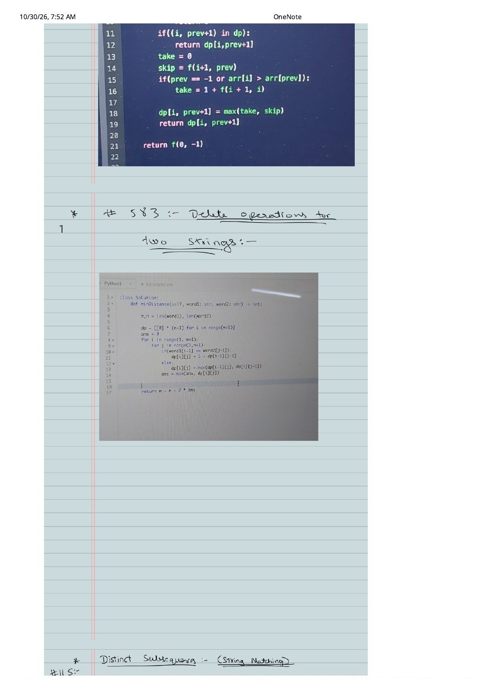
03_DP_String_notes_2.pdf p.3 — $m + n - 2 \cdot \text{LCS}$ formula for LeetCode 583 and start of LeetCode 115.View original note — DP String Notes 2 (Page 4): Distinct Subsequences ("rabbbit") & Wildcard Matching (#44)

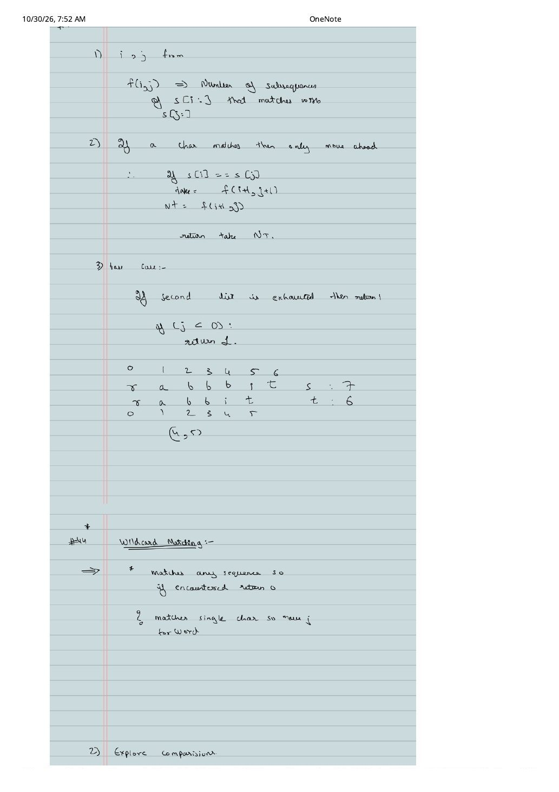
03_DP_String_notes_2.pdf p.4 — Counting take + notTake on "rabbbit" vs. "rabbit" and introducing '*' / '?' wildcards.View original note — DP String Notes 2 (Page 5): Wildcard '*' Binary Split Diagram

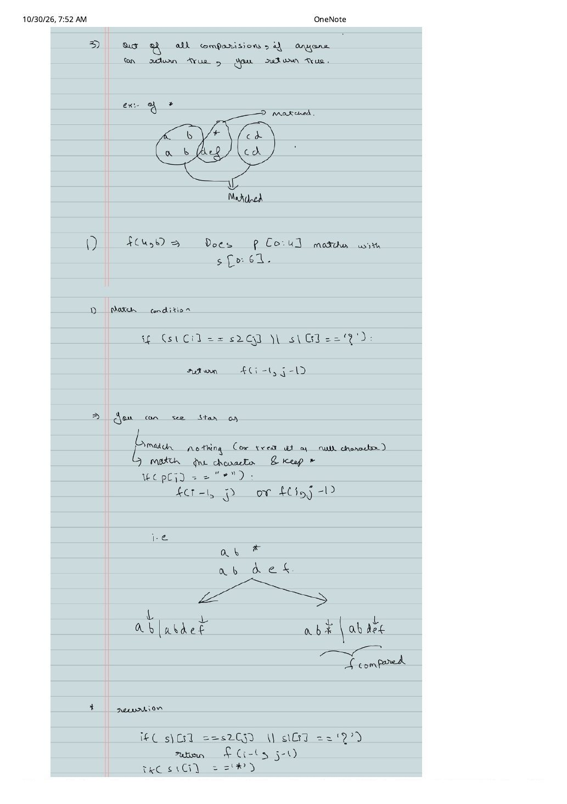
03_DP_String_notes_2.pdf p.5 — Splitting $p[i] == \texttt{'*'}$ into empty match $f(i-1, j)$ vs. single-char consumption $f(i, j-1)$ on "ab*" vs. "abdef".View original note — DP String Notes 2 (Page 6): Exact Base Cases for Wildcard Matching

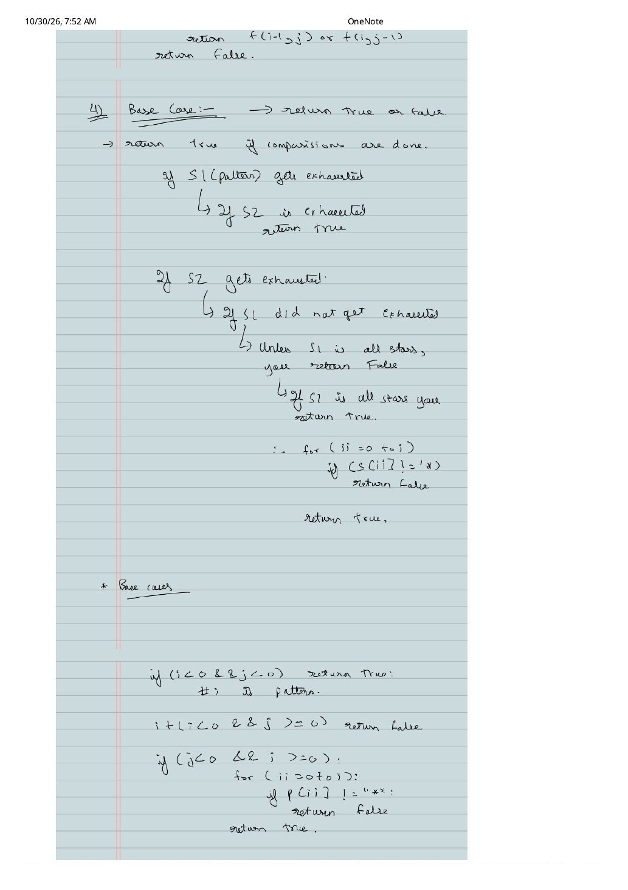
03_DP_String_notes_2.pdf p.6 — Verifying that an unexhausted pattern matches an empty string iff all remaining characters are '*'.View original note — DP String Notes 2 (Page 7): Ruled Spacer Sheet

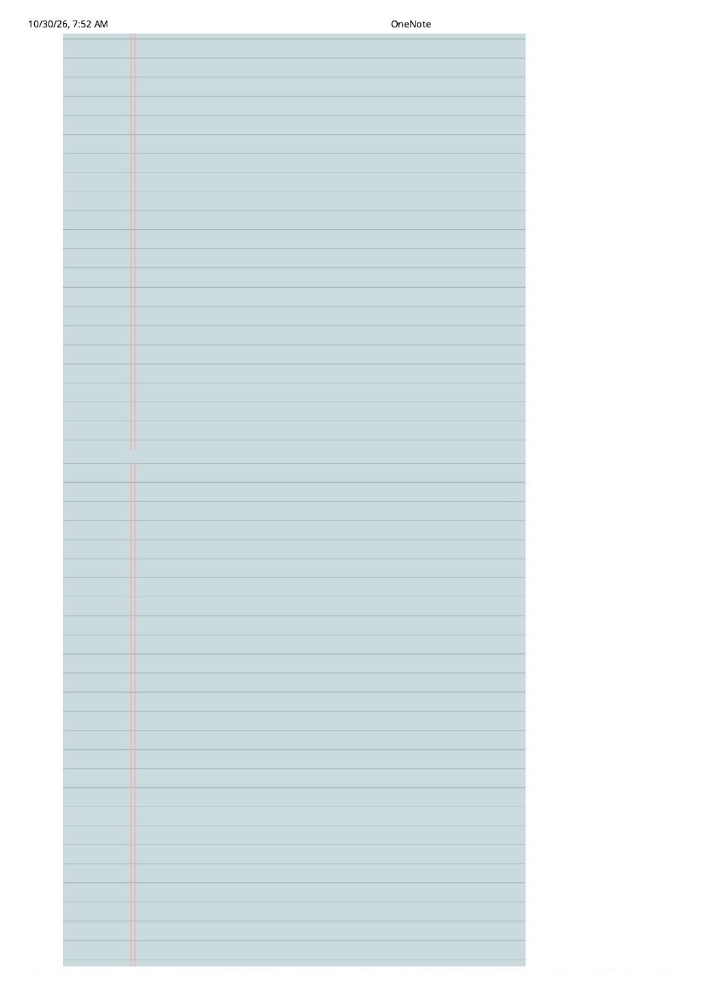
03_DP_String_notes_2.pdf p.7 — Spacer page in notebook export.View original note — DP String Notes 2 (Page 8): Quick Fibonacci Call-Tree Recap

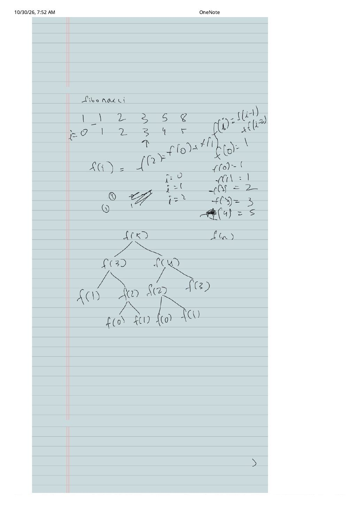
03_DP_String_notes_2.pdf p.8 — Scratch tree expansion of $f(5) \to f(3) + f(4)$.